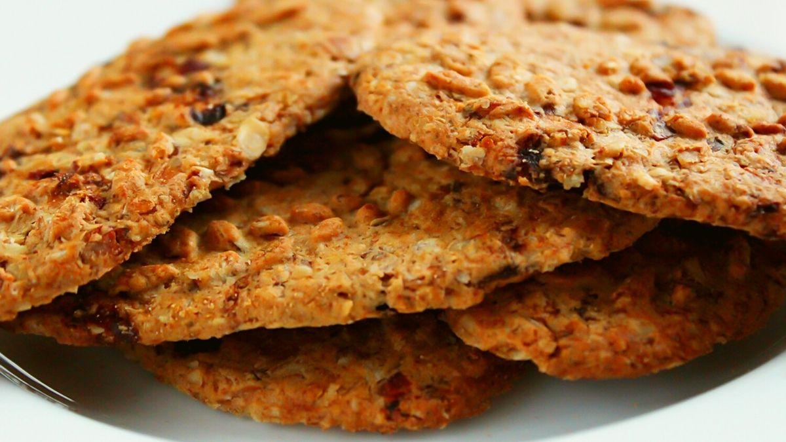
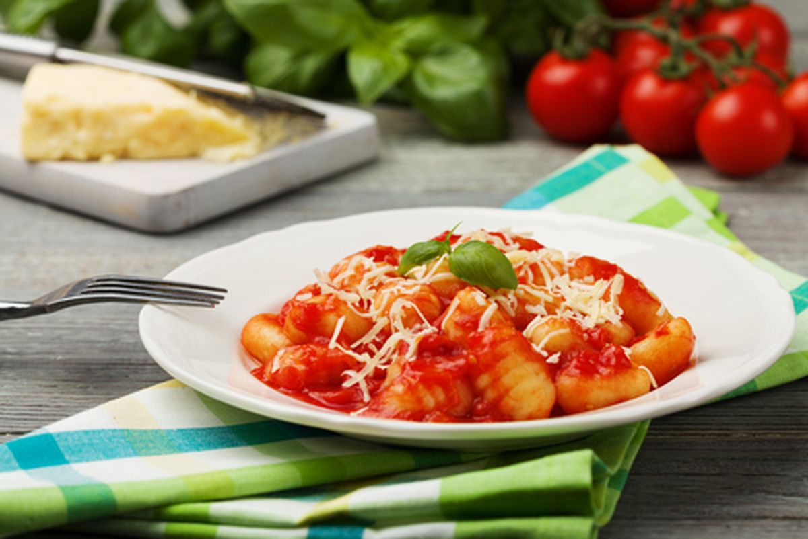

receitas de comidas saudáveis que vão revolucionar suas refeições
Cookie de aveia e cranberry
Ingredientes
2 xícaras de chá de aveia em flocos 1/2 xícara de chá de açúcar 1 xícara de chá de farinha de trigo 1 colher de chá de fermento químico em pó 6 colheres de sopa de margarina 2 ovos 1 colher de sopa de essência de baunilha 1/2 xícara de chá de cranberries secas
Modo de preparo
Em uma vasilha, coloque a aveia, o açúcar, a farinha, o fermento e misture bem.
Adicione a margarina, os ovos e misture novamente.
Junte a essência, as cranberries e misture até obter uma massa homogênea.
Faça bolinhas e distribua na assadeira untada, enfarinhada e dê uma leve amassada com uma colher
Asse em forno preaquecido a 180 °C por cerca de 18 minutos.
Agora é só servir! Bom apetite.
Nhoque de batata-doce
ingredientes
massa
Água para cozinhar 2 batatas doces pequenas 1 colher de sopa rasa de sal Aproximadamente 1 copo de farinha de trigo
molho
3 dentes de alho picados 1 colher de sopa de azeite 2 copos de molho de tomate 1 colher de chá de sal
Modo de preparo
Em uma panela, adicione a água (o suficiente para cozinhar a batata) e deixe ferver.
Descasque e corte as batatas em cubinhos.
Coloque elas para cozinhar até ficarem macias.
Escorra a água e amasse elas com um garfo até formar um purê.
Acrescente o sal, a farinha (peneirada) e misture até formar uma massa.
Polvilhe farinha na bancada para não grudar.
Faça rolinhos com a massa, corte os pedaços de nhoque do tamanho que desejar e coloque eles para cozinhar em água quente.
Assim que eles começarem a boiar, retire e coloque-os em um refratário.
Para o molho, doure o alho em uma panela com azeite.
Adicione o molho de tomate, o sal e deixe cozinhar por alguns minutos.
Despeje o molho no refratário com o nhoque, misture e sirva. Bom apetite.
Sopa de abóbora e cenoura
ingredientes
2 colheres de sopa de azeite de oliva (ou óleo de coco) 3 dentes de alho picados 1/2 cebola picada 1 colher de chá de sal 2 xícaras de chá de abóbora cabotiá picada 1 xícara de chá de cenoura picada Pimenta-do-reino a gosto Gengibre a gosto cortado em rodelas Cheiro-verde picado a gosto
Modo de preapro
Em uma panela, esquente o azeite e refogue o alho e a cebola com sal
Assim que dourar, adicione a abóbora, a cenoura, a pimenta e misture
Acrescente o gengibre e mexa
Despeje a água, tampe a panela e deixe cozinhar em fogo baixo até os legumes ficarem macios
Transfira tudo para um liquidificador e bata até formar um creme homogêneo
Salpique cheiro-verde por cima e sirva.